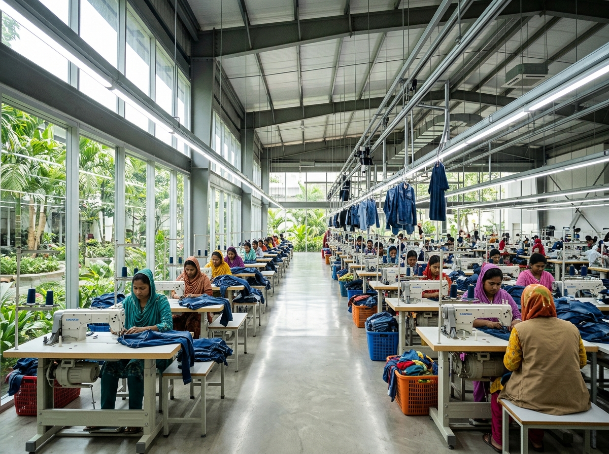

HUB 01 // BANGLADESHBangladesh Manufacturing Hub
High-Volume Scale & Duty-Free Export Advantage
Built for commercial volume, cost leadership, and sustainable compliance. Our Bangladesh facility specializes in bulk denim jeans, combed cotton t-shirts, underwear, chinos, and woven basics with preferential duty-free access to the EU, UK, Canada, and Australia.
- Core Specialties: Denim, T-Shirts, Underwear, Chinos, Knitwear
- Monthly Output: ~850,000 pcs across 32 automated sewing lines
- Best For: Bulk orders (500–100,000+ pcs), core retail programs
- Bulk Lead Time: 45–60 days post-PP sample approval
- Facility Hub: Gazipur Industrial Belt, Dhaka Division, Bangladesh